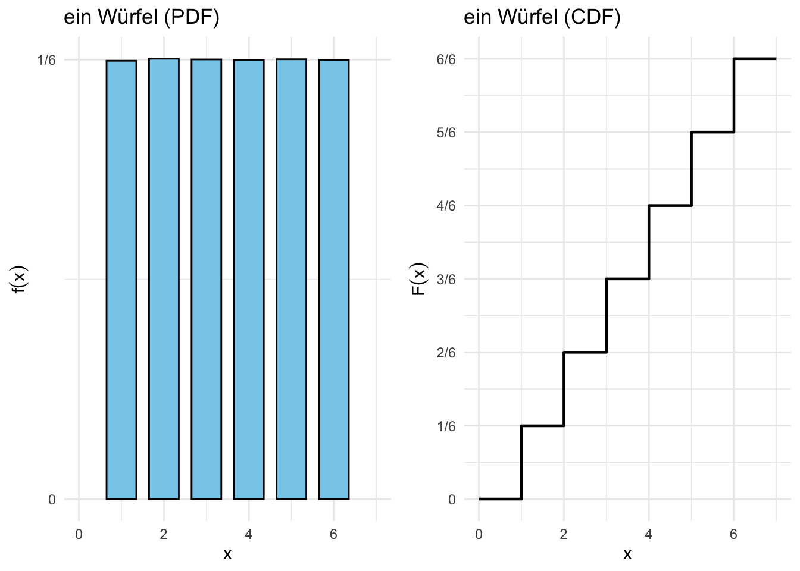

Code
library(ggplot2)
library(dplyr)
library(gridExtra)
# Funktion zum Berechnen der Wahrscheinlichkeits- und Verteilungsfunktionen
simulate_dice <- function(n_dice) {
rolls <- replicate(1000000, sum(sample(1:6, n_dice, replace = TRUE))) # Simulation von n_dice Würfeln
df <- as.data.frame(table(rolls) / length(rolls)) %>%
rename(x = rolls, probability = Freq) %>%
mutate(x = as.numeric(as.character(x))) %>%
arrange(x) %>%
mutate(cumulative_probability = cumsum(probability))
# Zusätzliche Punkte für 0 und 1
df <- rbind(data.frame(x = 0, probability = 0, cumulative_probability = 0),
df,
data.frame(x = max(df$x) + 1, probability = 0, cumulative_probability = 1))
return(df)
}
# Daten für 1 Würfel
df_1dice <- simulate_dice(1)
# Plot für die Wahrscheinlichkeitsfunktion (PDF) von 1 Würfel
plot_pdf_1 <- ggplot(df_1dice, aes(x = x, y = probability)) +
geom_bar(stat = "identity", fill = "skyblue", color = "black", width = 0.7) +
labs(title = "ein Würfel (PDF)", x = "x", y = expression(f(x))) +
theme_minimal() +
ylim(0, max(df_1dice$probability, na.rm = TRUE) * 1.1) +
xlim(0, 7) +
scale_y_continuous(breaks = seq(0, 1/6, by = 1/6),
labels = c("0", "1/6"))
# Plot für die kumulative Verteilungsfunktion (CDF) von 1 Würfel
plot_cdf_1 <- ggplot(df_1dice, aes(x = x, y = cumulative_probability)) +
geom_step(linewidth = 0.8, color = "black") +
labs(title = "ein Würfel (CDF)", x = "x", y = expression(F(x))) +
theme_minimal() +
ylim(0, 1) +
xlim(0, 7) +
scale_y_continuous(breaks = seq(0, 1, by = 1/6),
labels = c("0", "1/6", "2/6", "3/6", "4/6", "5/6", "6/6"))
# Anordnung der beiden Plots in einem 2x1-Layout
grid.arrange(plot_pdf_1, plot_cdf_1, ncol = 2)
